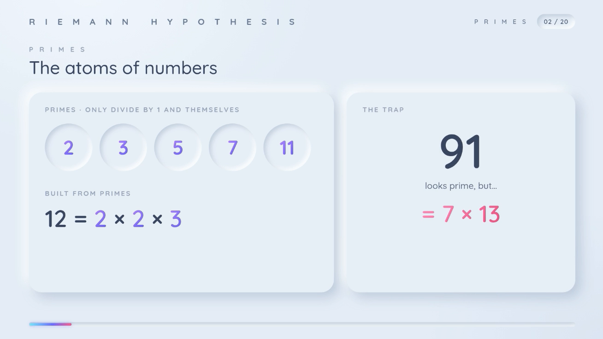
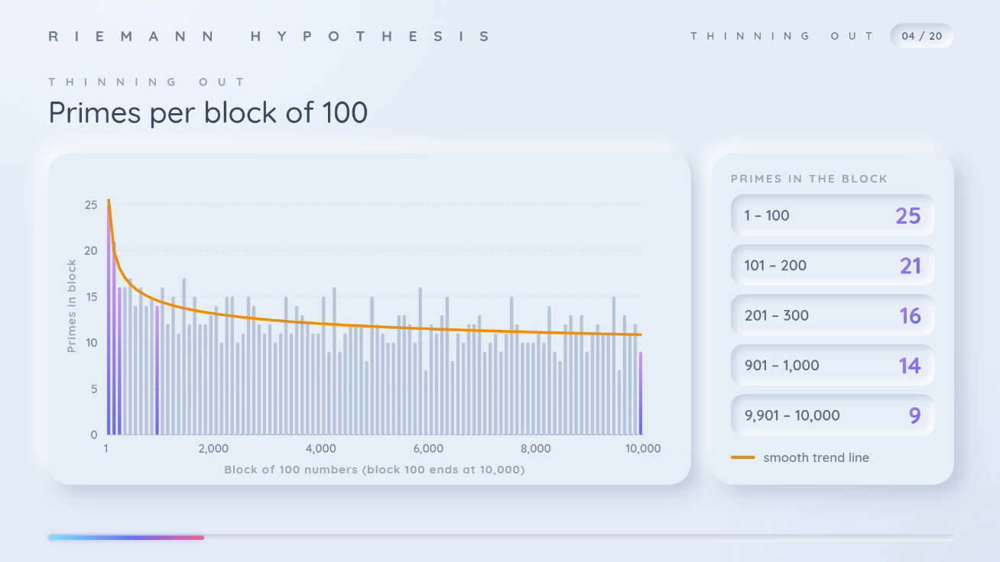
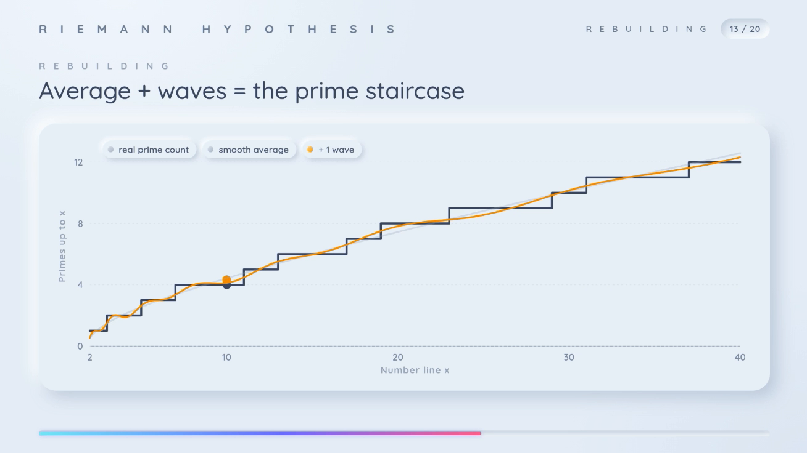

I Used AI to Understand One of Maths’ Famous Puzzles. I’m Not a Maths Person.
I’m not a maths person. Today’s experiment started with curiosity. I kept hearing about the Riemann Hypothesis, so I wondered whether AI could help someone with no maths background actually understand it.
Then I turned the whole session into an 8-minute explainer video.
Watch the explainer
Slowing it right down
My first reaction was honest: “even the claim isn’t clear to me.”
So I slowed it right down. One idea at a time, real numbers, and a chart whenever words stopped working.
What worked
Concrete examples before theory. Is 91 prime? It isn’t. 7 × 13 got me.

Charts built from real data, not made-up illustrations.

Pushing back every time something didn’t add up. “Why 20.5?” “Why does 10 give 7.83 when I count 4 primes?”
Asking for the answer in 10 words, then in 20.
Where I hit the wall
Zeta zeros and complex numbers. That’s normal, even for maths students.
My takeaway, in my own words
Primes look random, but they thin out along a smooth average. The real count wobbles around that average, and the hypothesis says the wobble never gets too big.

The part that fascinated me most is that checking trillions of cases still isn’t proof when the list goes on forever.
The honest part
The AI didn’t make me a mathematician. It made a hard idea something I could approach.
AI is at its best as a patient tutor that never gets tired of “explain it again, simpler.”